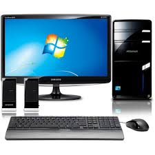

En este modulo se describe el concepto de computador y tambien su organizacion interna, los elementos que forman parte de el, el funcionamiento general que tienen y como se interconectan.
Se explican los dos tipos de organizaciones principales, Von Neumann y Harvard, y se ven cuales son las caracteristicas de cada una de estas organizaciones.
Asimismo, se presentan los dos tipos de computadores que utilizan habitualmente arquitectura Harvard:
Finalmente, se realiza una explicacion breve sobre la evolucion de los computadores desde las primeras maquinas electrónicas de calculo hasta los computadores actuales, y se muestra la organizacion de los microprocesadores multinucleo.
| SISTEMA OPERATIVO | CREADOR | CREADOR |
| WINDOWS | BILL GATES | |
| LINUX | LINUS TORVAL |